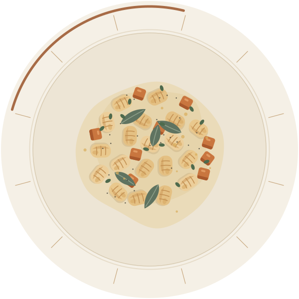
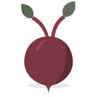
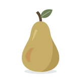
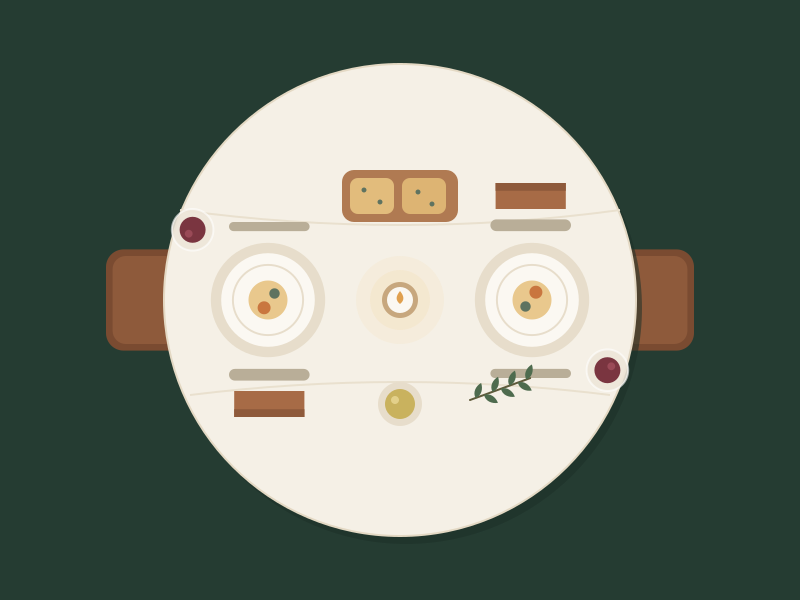
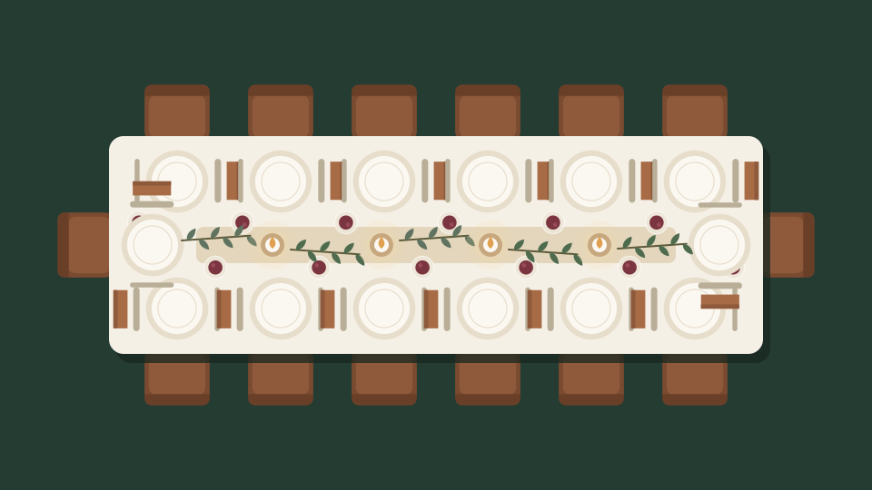

SIELORA, restauracja z kuchnią sezonową Smak, który zostaje w pamięci
Gotujemy w rytmie pór roku. Z produktów, które właśnie dojrzały, tworzymy autorskie dania kuchni europejskiej i podajemy je bez pośpiechu, w miejscu, do którego chce się wracać.
Zapraszamy od wtorku do niedzieli, od 12:00.

Kuchnia, która słucha pór roku
Kartę układamy od nowa cztery razy w roku. Zaczynamy od pytania, co właśnie dojrzało, a dopiero potem wymyślamy danie.
Wiosną sięgamy po młode warzywa i zioła, latem po pomidory i owoce, jesienią po grzyby, dynię i korzenie, a zimą po to, co dobrze znosi długie gotowanie. Dzięki temu każde danie trafia na stół w swoim najlepszym momencie.
-
Składniki z sezonu
Kupujemy krótko przed podaniem, a kartę układamy według tego, co jest najlepsze w danym tygodniu. Dlatego niektóre dania znikają po kilku tygodniach.
-
Rzemiosło na co dzień
Focaccię pieczemy każdego ranka, makarony i gnocchi przygotowujemy na miejscu, a wywary gotujemy od podstaw.
-
Gościnność bez pośpiechu
Elegancko, ale swobodnie. Jest u nas miejsce na kolację we dwoje, rodzinny obiad i rozmowę, która przeciąga się do deseru.
Jesień w karcie
Od września do listopada w kuchni rządzą grzyby, dynia i warzywa korzeniowe. Oto składniki, od których zaczęliśmy jesienną kartę, i dania, w których je znajdziesz.
-

Dynia
wrzesień–listopad
W karcie: Gnocchi z pieczoną dynią
-
Borowiki
sierpień–październik
W karcie: Risotto z borowikami
-

Buraki
sierpień–listopad
W karcie: Tatar z pieczonego buraka
-

Gruszki
sierpień–październik
W karcie: Panna cotta z owocami

Miejsce na długie rozmowy
Drewniane stoły, lniane obrusy i ciepłe światło, które wieczorem przygaszamy. Stoliki stoją na tyle daleko od siebie, że rozmowa przy sąsiednim nie miesza się z Twoją.
- Sala główna
- 46 miejsc przy stolikach dla 2–6 osób
- Sala kameralna
- Do 16 osób, oddzielona od sali głównej
- Stoliki przy oknie
- Dla dwojga. Warto zarezerwować je z wyprzedzeniem.

Kameralne spotkania i uroczystości
Urodziny, rocznica, chrzciny albo kolacja z zespołem. W sali kameralnej przyjmiemy do 16 osób i przygotujemy menu dopasowane do okazji, sezonu i diet Twoich gości.
- Menu serwowane albo półmiski do dzielenia się przy stole
- Uwzględnienie alergii i diet każdego gościa
- Stół udekorowany zielenią z bieżącego sezonu
Godziny otwarcia
Ostatnie rezerwacje przyjmujemy na 1,5 godziny przed zamknięciem.
| Dzień | Godziny |
|---|---|
| Poniedziałek | nieczynne |
| Wtorek | 12:00–21:00 |
| Środa | 12:00–21:00 |
| Czwartek | 12:00–21:00 |
| Piątek | 12:00–23:00 |
| Sobota | 12:00–23:00 |
| Niedziela | 12:00–20:00 |
Odwiedź nas
- Adresul. Jesionowa 17
00-000 Miasto Pokazowe - E-mailkontakt@sielora.example
Adres i e-mail są fikcyjne. Służą wyłącznie prezentacji projektu.
Zarezerwuj stolik
Wybierz dzień, godzinę i liczbę osób. Jeśli świętujesz coś wyjątkowego, napisz o tym w uwagach, a przygotujemy stół z myślą o tej okazji.